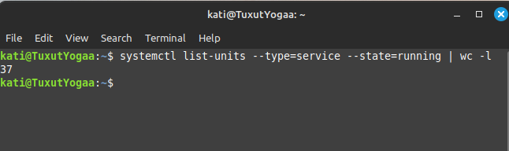
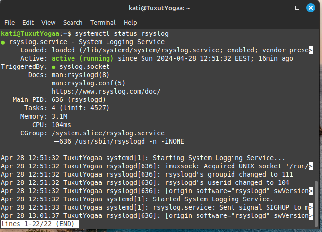
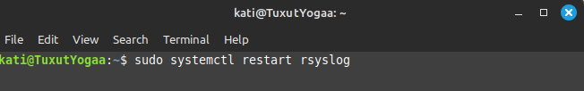
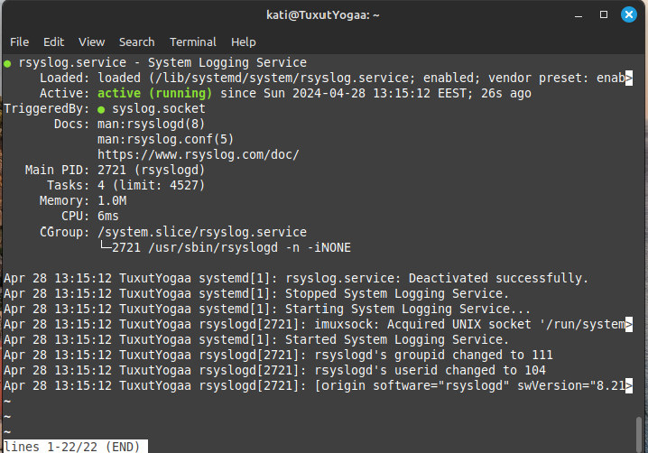
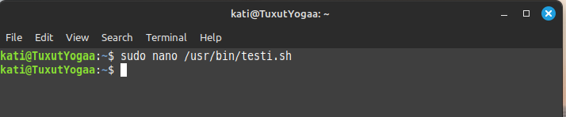
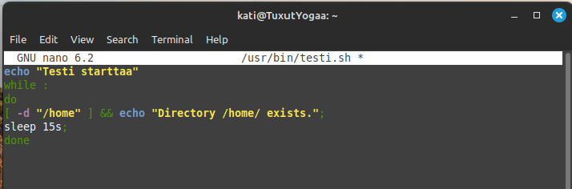
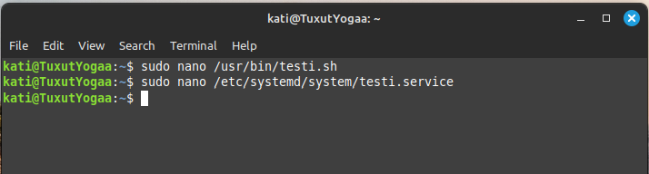
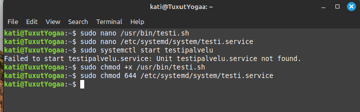
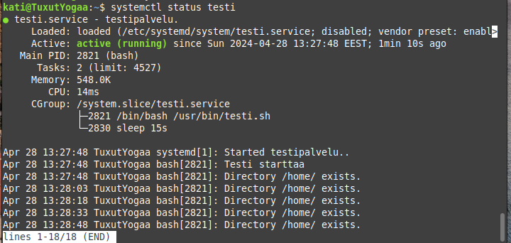

Tehtävä 1
Käynnistin Linux-terminaalin ja tutkin järjestelmän palveluita. Kuinka monta palvelua on running tilassa? Running tilassa on 37 palvelua.
Etsin rsyslog -nimisen palvelun, joka löytyy kuvassa näkyvällä komennolla. Palvelu on käytössä enabled ja myöskin käynnissä running. Rsyslog palvelun PID on 636. Palvelu Rsyslog on vastuussa järjestelmän lokitietojen käsittelystä. Se vastaanottaa lokitietoja sovelluksilta ja järjestelmäkomponenteilta, ja tallentaa ne määriteltyihin tiedostoihin, lähettää eteenpäin tai käsittelee niitä muilla tavoilla.
Tehtävä 2
Uudelleenkäynnistin Rsyslog palvelun tällä tavalla.
 Tehtävä 3
Loin sen jälkeen uuden palvelun nimeltä testi. Palvelun tulee sisältää seuraava bash skripti: echo "Testi starttaa" while : do [ -d "/home" ] && echo "Directory /home/ exists."; sleep 15s; done
Loin siis kyseisen nano tiedoston. Lisäksi loin testi palvelun. Annoin myös suoritusoikeudet kyseiseen palveluun.
   Otin kuvan palvelun Statuksesta:
Palvelun PID on 2821. Palvelu on käytössä ja käynnissä.
Statuksessa tulostetaan ja kerrotaan, että hakemisto home on olemassa.
Kuvakaappaukseni talteen tekemästäsi palvelusta ja sen suorituksesta
